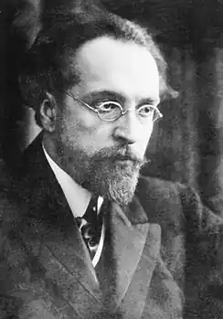

(21.05.1877 — 28.10.1940)
Російський історик, письменник, педагог; автор популярної книги "Легенди та міфи Древньої Греції" (1922).
Закінчив Московський університет (1903) і почав працювати в Твері в жіночій учительській семінарії ім. П. П. Максимовича. У 1905 працював в університеті Ед. Мейєра в Берліні. В кінці 1906 повернувся до Твері; був обраний головою ради Тверського приватного реального училища. З відкриттям у Твері Народного університету в січні 1907 читав в цьому навчальному закладі лекції з історії культури. У 1908 був обраний професором загальної історії московських Вищих жіночих педагогічних курсів, заснованих при Товаристві виховательок і вчительок їм. Д. І. Тихомирова;читав лекції до закриття курсів в 1918 році. Одночасно викладав історію в навчальних закладах Москви, читав лекції в Московському суспільстві народних університетів. У 1911-1912 керував екскурсіями російських вчителів у Римі, читав лекції в римських музеї історії античного мистецтва, римського Форуму, Палатіна. З 1915 професор Московського міського університету ім. А. Л. Шанявського по кафедрі історії релігій. З 1920 професор факультету суспільних наук Московського державного університету. Одночасно викладав історію культурыв 1-му Московському педагогічному інституті (1918-1925). З 1935 до смерті складався професором ІФЛІ (Московський державний інститут історії, філософії і літератури). З 1933 був редактором відділу давньої історії Великої радянської енциклопедії та Малої радянської енциклопедії, написав кілька сотень статей і заміток. Видав переклад "Листів темних людей" (1907), написав книги "Казки африканських народів" (1910), "Магомет і магометанство" (1915), "Італія в 1914 р." (1915), два томи "Казки циган" (1921 і 1922), "Попередники християнства (східні культури вРимской імперії)" (1922), "Первісна релігія" (1922), "Казки народів островів Великого океану" (1922). Однак ниабольшей популярністю до цих пір користується книга, написана в 1914 "для учениць і учнів старших класів середніх навчальних закладів, а також для всіх тих, хто цікавиться міфологією греків і римлян". Під своїм початковим назвою "Що розповідали древні греки та римляни про своїх богів і героїв" книга була видана в 1922 р. і 1937. З 1940 вона неодноразово перевидавалася масовими тиражами під назвою "Легенди і міфи Стародавньої Греції".